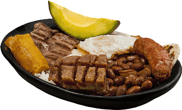

Nuestro Menu Se Comforma Por Los Siguientes Platos
Platos Colombianos
Platos internacionales De
Algunas Partes Del Mundo
Antioquia
La Bandeja Paisa es un plato colombiano que tradicionalmente contiene frijoles rojos, arroz, carne molida, chicharrón, chorizo, huevo frito, plátano maduro, aguacate, arepa